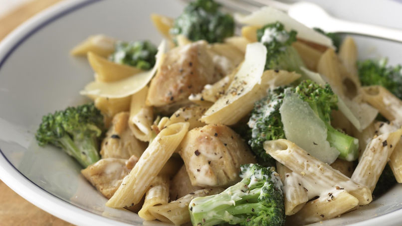

Pasta with chicken

This is a very simple and fast recipe for when youre rushing but still want to eat something healty
It consists in pasta (the one of your preference), chicken breast cutted in cubes and cheese. You can add also brocoli to make it perfect
Ingredients
- 150g of your prefered pasta
- 150g of chicken breast
- 50g of your prefered cheese
- Brocoli (Optional)
Steps
- Put 1,5 liters of water to boil in a pan with some salt
- Cut the chicken breast in cubes of 2cm x 2cm x 2cm aprox
- Once the water is boiling add the pasta following the time indicated on the package
- Cook the chicken in a pan with some olvie oil, salt and pepper
- Optional Cut the brocoli and boul it for five minutes
- Put the pasta on a bowl, add some olvie oil and the cheese and mix it together
- Add the chicken and the brocoli and enjoy this delicious dish
I hope you like this easy and healty recipe as much as I do
Back to main